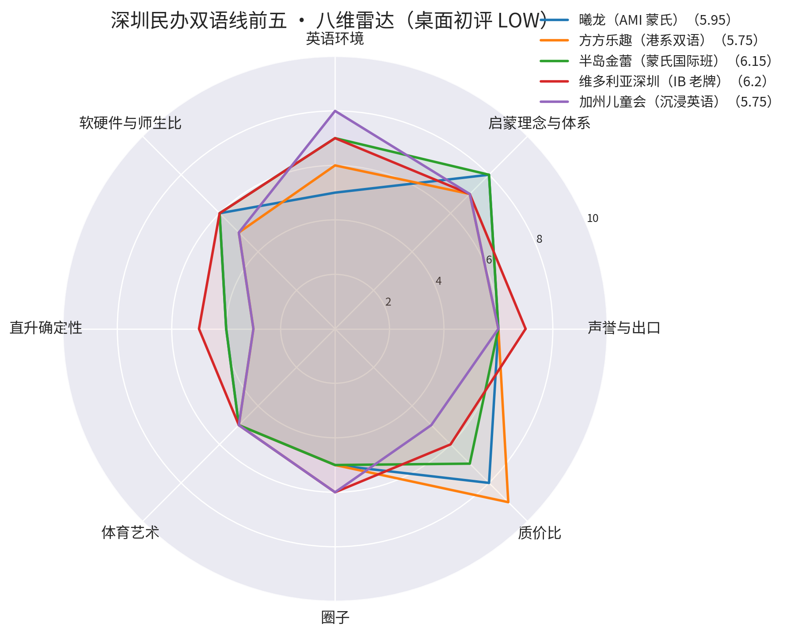
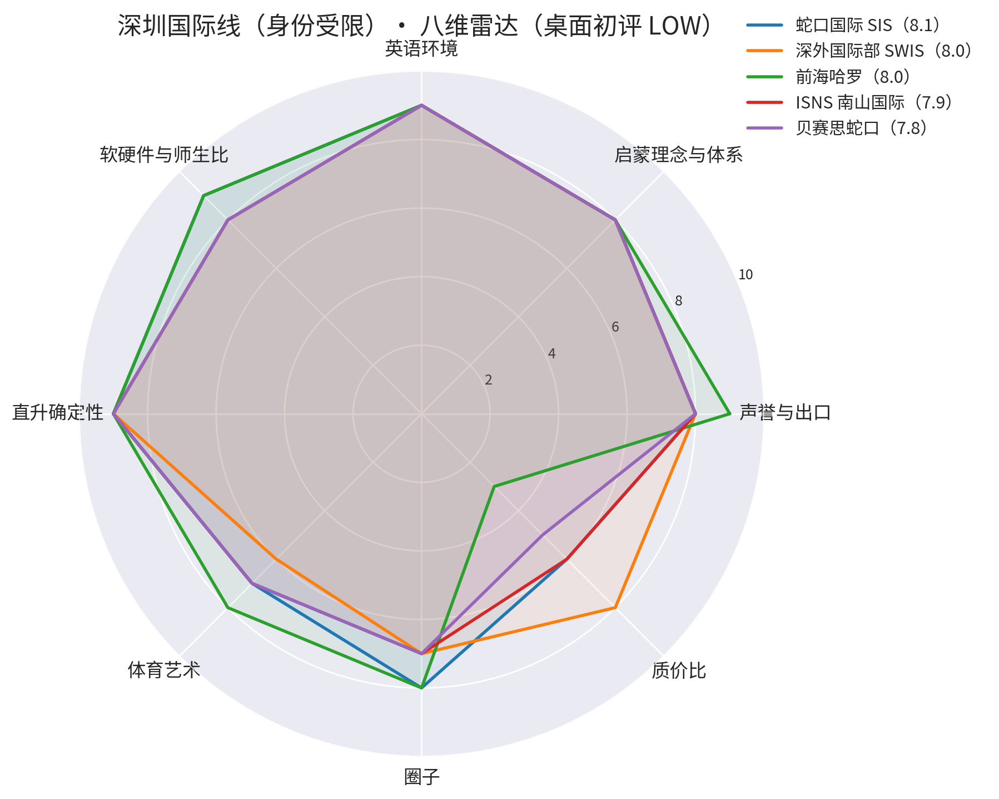

麦兜（2024.9.30 生）· 2027年9月入园全局调研 v2（第一性原则重构）｜ 数据核验截至 2026-09-05
费用为 2026/27 当年口径（官网/招生页）；注意区分"孩子本人持证"与"父母一方持证"两种身份要求。
| 学校 | 区域 | 体系 | 幼儿段费用（2026/27） | 身份要求 | 班别入口 |
|---|---|---|---|---|---|
| 深外国际部 SWIS | 南山白石三道 | IB 全学段一贯（政府投资） | 约 12.1–12.75 万/年起 | 父母一方为港澳台/外籍即可（官网招生问答）——父亲香港永居 → 麦兜现在就符合 | 幼儿四岁班起；麦兜最早入学年待 cutoff 核实（8/31 划线则 2029/30）；2027/28 二期报名 2026.10.15–2027.1.3 进行中 |
| 蛇口国际 SIS | 蛇口（鲸山/太子湾/网谷） | IB（PYP+DP），1988 最老牌，非营利，40+ 国籍 | Nursery–PreK（2–4 岁）19 万/年；K 28.85 万/年 | 孩子本人持外国护照＋居留许可或港澳台身份；不招内地身份证 | 2 岁起 Nursery；全年滚动 |
| ISNS 南山国际 | 南山桃源龙苑路 | IB 一贯＋加拿大课程 | K2–K5（2–5 岁）21.9 万/年；申请费 2,500 | 孩子本人持外国护照或港澳台居民身份证 | 2 岁起（K2）；滚动录取（4/1 后申请算下一学年） |
| 深美 SAIS | 蛇口四海公园旁 | 美式＋IB PYP＋新加坡数学，ParkLab 户外 | ELE（6 岁及以下）14.8 万/年；K 15.8 万/年 | 外籍人员子女及港澳台籍学生 | Pre-K 起；教育部批准办学 |
| QSI 科爱赛 | 蛇口 | 美式 Mastery Learning | 2–4 岁约 14.04 万/年 | 孩子本人外籍/港澳台 | 2 岁起 |
| 前海哈罗 | 前海 | 英式哈罗公学，院舍制 | 幼儿园 29.14–30.13 万/年 | 孩子本人外籍/港澳台 | 2 岁起；高端价位 |
| 贝赛思幼儿园（蛇口/福田） | 蛇口/福田 | BASIS ECE 学术启蒙 | PreK 26.42 万（半日减 3 万）、K 28.22 万；申请费 2,000 | 外国护照/港澳台永居（不接受小国绿卡） | PreK1 3–4 岁（8/31 cutoff → 麦兜 2028） |
关键发现（10/20）：SWIS 身份口径为"父母至少一方港澳台居民"——父亲是香港永居，麦兜现在就符合申请资格，不用等自己的证件；其余各校须孩子本人持证，2027.10 单程证批出后解锁。不搬港备用方案的核心载体＝SWIS（现在可申）＋ ISNS/SIS/SAIS（证件下来后可申）。
| 园所 | 区域 | 体系/特色 | 费用口径（年份） | 班别 2027/28 | 备注 |
|---|---|---|---|---|---|
| 方方乐趣中英文（幼儿部） | 福田新洲南路金地海景花园 | 港系双语（香港方方乐趣 2002 创办） | 19,300/学期、全年含杂费约 5–6 万（2026 媒体口径） | 托班/小小班 ✓ | ⚠️ 民转公进行中（2026.5 报道，家长联名挽留双语模式）——双语存续是最大变量，报名前电话确认转型结果 |
| 曦龙幼儿园 | 罗湖延芳路 | AMI 蒙氏示范园，混龄，IC 班 1.5–3 岁可收 | 保教 5,000＋伙食 500/月（罗湖区政府口径）≈ 6 万/年 | ✓ IC 班可收 | 收费有政府备案坐实，质价比路线 |
| 半岛金蕾幼儿园 | 罗湖 | 半岛蒙氏系，国际班外教全天带班 | 约 6 万/年档（2023，待核） | ✓ | 罗湖老牌蒙氏 |
| 维多利亚幼儿园（深圳） | 福田 | 老牌 IB 园（2001 创办，3 园区），与香港 VEO/VIC 同宗品牌 | 6,500/月（2022）与 1.8 万/月（2023）两说，差距大、待核 | ✓ | 用户为 VEO 康怡校友，品牌熟悉度＋IB 体系 |
| 普林斯顿国际创科幼儿园 | 罗湖黄贝岭（全市 6 校区） | 美式，外教多，体育特色，Toddler 12 人小班 | 约 16,500/月（2020–22，待核） | ✓ | 连锁品牌 |
| 加州儿童会 | 福田四季山水／南山瑞河耶纳 | 沉浸式英语（外籍 2006 创办） | 12–15 万/年档（2022–23 多源，待核） | ⚠️ 3 岁起招（2015 口径）——麦兜 2027.9 差一个月，2027 或不可入，待核 | 无校车、户外一般（2022 媒体） |
| 英皇国际幼儿园 | 福田 | 双语，城堡校舍 | 12,000/月（2020，待核） | ✓ | 待核 |
| 金生幼儿园 | 福田景田 | IB-PYP 双语沉浸 | 媒体口径约 9.8 万/学期（2022，疑偏高，待核） | ✓ | IB 概念，费用须核实 |
| 科发幼儿园 | 福田香蜜湖 | EYFS＋耶鲁载格勒体系，市一级 | 保教 24,600/月（2026） | ✓ | 费用≈香港国际校，过渡年不值 |
| 吉纽斯国际幼儿园 | 连锁 | DIC＋蒙氏＋外教 | 1 万+/月（2022，待核；另有 1,800/月口径，矛盾大、必核） | ✓ | 待核 |
高端参考（不作过渡年主线）：荟同 24.5–28.5 万/年、爱文 28.8 万/年、贝赛思幼儿园福田 PreK 约 23 万/年、IPC 19.8 万/年（南山/蛇口为主，2026 口径）——费用≈香港正式校、一年就走，不追。
⚠️ 置信度 LOW：仅媒体公开口径、无实地参观，只是相对排序的占位，不是结论；参观后按香港同框架逐园复评。维度顺序：声誉与出口 / 启蒙理念与体系 / 英语环境 / 软硬件与师生比 / 直升确定性 / 体育艺术 / 圈子 / 质价比（权重 10/20/15/10/15/10/10/10）。
| 园所 | 八维 | 加权总分 |
|---|---|---|
| 维多利亚深圳（IB 老牌） | 7 / 7 / 7 / 6 / 5 / 5 / 6 / 6 | 6.2 |
| 半岛金蕾（蒙氏国际班） | 6 / 8 / 7 / 6 / 4 / 5 / 5 / 7 | 6.15 |
| 普林斯顿创科（美式） | 6 / 7 / 7 / 6 / 4 / 8 / 5 / 5 | 6.05 |
| 科发（EYFS+耶鲁） | 6 / 8 / 7 / 7 / 4 / 6 / 6 / 3 | 6.05 |
| 金生（IB-PYP） | 6 / 8 / 7 / 6 / 5 / 5 / 6 / 3 | 6.0 |
| 曦龙（AMI 蒙氏） | 6 / 8 / 5 / 6 / 4 / 5 / 5 / 8 | 5.95 |
| 方方乐趣（港系双语） | 6 / 7 / 6 / 5 / 3 / 5 / 5 / 9 | 5.75 |
| 加州儿童会（沉浸英语） | 6 / 7 / 8 / 5 / 3 / 5 / 6 / 5 | 5.75 |
| 吉纽斯（DIC+蒙氏） | 5 / 7 / 6 / 6 / 4 / 5 / 5 / 6 | 5.6 |
| 英皇（双语城堡） | 5 / 6 / 6 / 7 / 4 / 5 / 5 / 5 | 5.4 |
⚠️ 置信度 LOW–MED（官网/招生页 2026/27 口径、无实地参观）；身份受限，仅作"不搬港备用方案"与 2028+ 参考，不构成申请建议。
| 学校 | 八维 | 加权总分 |
|---|---|---|
| 蛇口国际 SIS | 8 / 8 / 9 / 9 / 9 / 7 / 8 / 6 | 8.1 |
| 深外国际部 SWIS | 8 / 8 / 9 / 8 / 9 / 6 / 7 / 8 | 8.0 |
| 前海哈罗 | 9 / 8 / 9 / 9 / 9 / 8 / 8 / 3 | 8.0 |
| ISNS 南山国际 | 8 / 8 / 9 / 8 / 9 / 7 / 7 / 6 | 7.9 |
| 贝赛思蛇口 | 8 / 8 / 9 / 8 / 9 / 7 / 7 / 5 | 7.8 |
| 深美 SAIS | 7 / 8 / 9 / 7 / 8 / 7 / 6 / 6 | 7.45 |
| QSI 科爱赛 | 7 / 7 / 9 / 7 / 8 / 6 / 6 / 7 | 7.25 |


罗湖户籍可申请公办/普惠园，2025 春罗湖备案价：保教费 840–1,600/月（金丽 840、市一幼 1,008、童晖 1,600）＋伙食 400–500/月。几乎免费、离家近，但英语环节薄弱，与"英语保温"目标冲突——列为兜底，不作主线。 [罗湖区政府收费备案公示](https://www.szlh.gov.cn/zwgk/zdlyxxgk/jghsf/fwjg/content/post_11997085.html)